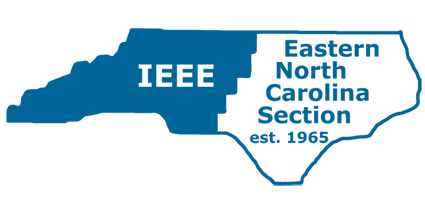
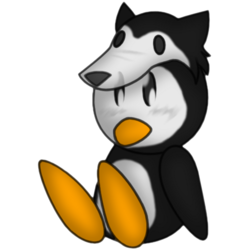

<div class="row">
  <div class="col-md-8 col-md-offset-2">
    <h2>Professional Service</h2>


    <div class="panel panel-default">
      <div class="panel-heading">
        <h3 class="panel-title">Triangle Linux Users Group <small>May 2013-present</small></h3>
      </div>
      <div class="panel-body">

        <div class="media">
          <div class="media-left">
            
          </div>
          <div class="media-body">
            <p>The <a href="http://trilug.org"><strong>Triangle Linux Users Group</strong></a>
               is an active group of developers and system administrators in the
               Raleigh-Durham area. We have held meetings on everything from
               server administration using Puppet, game development using OpenGL,
               IPv6, Raspberry Pi, and more.</p>
            <p>I started attending meetings after completing my Bachelor's degree,
               and have served on the steering committee for two years. I
               currently serve as the chair of the steering committee.</p>
            <p>The steering committee is responsible for coordinating the
               monthly technical meetings, managing the server hosting our
               website and member email services, and securing sponsorship for
               our expenses. As chair, I coordinated weekly meetings over IRC
               with the steering committee to identify and delegate tasks.</p>
            <ul>
              <li>Coordinated monthly meetings with attendance in excess of 60
                  people.</li>
              <li>Sought out speakers and sponsors for the monthly meetings,
                  and delegated tasks to the steering committee as chair.</li>
              <li>Acted as the student liaison between <strong>NCSULUG</strong>
                  and <strong>TriLUG</strong>.</li>
            </ul>
          </div>
        </div>

      </div>
    </div>


    <div class="panel panel-default">
      <div class="panel-heading">
        <h3 class="panel-title">IEEE Eastern NC Section <small>August 2011-December 2014</small></h3>
      </div>
      <div class="panel-body">

        <div class="media">
          <div class="media-left">
            
          </div>
          <div class="media-body">
            <p>Out of the IEEE's geographical sections, the
               <a href="http://sites.ieee.org/encs"><strong>Eastern North Carolina
               Section</strong></a> is one of the largest in the United States with
               over 3000 members across the electrical engineering disciplines. The
               IEEE is involved in professional development, academic publishing,
               standards development, and political advocacy, and the Eastern NC
               Section provides these services to its members at the local level.</p>
            <p>I first got involved as the webmaster for the section, and served
               on the executive committee as the Secretary for two years. In
               addition to working with the section proper, I also volunteered
               as the interim chair of the local chapter of the <strong>Computer
               Society</strong>.</p>
            <ul>
              <li>Migrated the IEEE section website from a legacy hand-made
                  HTML site to a Wordpress website, and conducted training to
                  help volunteers use it to publicize their own meetings.</li>
              <li>Revived the ENCS Newsletter that publishes information
                  about recent and future events each month to the membership.</li>
            </ul>
          </div>
        </div>

      </div>
    </div>


    <div class="panel panel-default">
      <div class="panel-heading">
        <h3 class="panel-title">NC State University Graduate Student Association <small>August 2012-December 2014</small></h3>
      </div>
      <div class="panel-body">

        <div class="media">
          <div class="media-left">
            
          </div>
          <div class="media-body">
            <p>The <a href="http://ugsa.ncsu.edu"><strong>University Graduate
               Student Association</strong></a> is a student organization that
               has represented and advocated for the graduate student body at
               NC State University since 1958.</p>
            <p>I first joined the UGSA for one year as the representative for the
               Computer Science department. At the same time, I assumed the role of
               President of the <strong>Computer Science Graduate Student
               Association</strong> in order to bring it back to life after an extended
               period of inactivity.</p>
            <p>In my second and third years with the UGSA, I acted as the Vice
               President of Communication on the Executive Board and was responsible
               for the CSCGSA website, the monthly newsletter, the internal mailing
               lists, and managing the UGSA Publicity Committee.</p>
            <ul>
              <li>Helped organize the 2013 <strong>Graduate Student Research
                  Symposium</strong> as chairman of the <strong>Academic Policy
                  Committee</strong>.</li>
              <li>Re-established the <strong>Computer Science Graduate Student
                  Association</strong> as an active UGSA chapter in good standing.</li>
              <li>Served two terms as the graduate student representative for the
                  <strong>University Standing Committee on Copyright</strong>.</li>
            </ul>
          </div>
        </div>

      </div>
    </div>


    <div class="panel panel-default">
      <div class="panel-heading">
        <h3 class="panel-title">NC State Linux Users Group <small>May 2012-May 2014</small></h3>
      </div>
      <div class="panel-body">

        <div class="media">
          <div class="media-left">
            
          </div>
          <div class="media-body">
            <p>The <a href="http://lug.ncsu.edu"><strong>NC State Linux Users
               Group</strong></a> is a community of NC State students and alumni
               that get together weekly to discuss Linux, open source software,
               and technology in general. During my time at NC State, I acted as
               PR Officer, Treasurer, President, and Advisor before handing off
               the responsibilities to a new generation of student leaders.</p>
            <ul>
              <li>Coordinated the 2013 and 2014 <a href="http://lug.ncsu.edu/fossfair"><strong>Free
                  and Open Source Software Fair</strong></a>.</li>
              <li>Acted as the student liaison between <strong>NCSULUG</strong>
                  and <strong>TriLUG</strong>.</li>
              <li>Contributed to developing the club's Django website and and maintaining the club's
                  server.</li>
              </li>
            </ul>
          </div>
        </div>

      </div>
    </div>


  </div>
</div>
